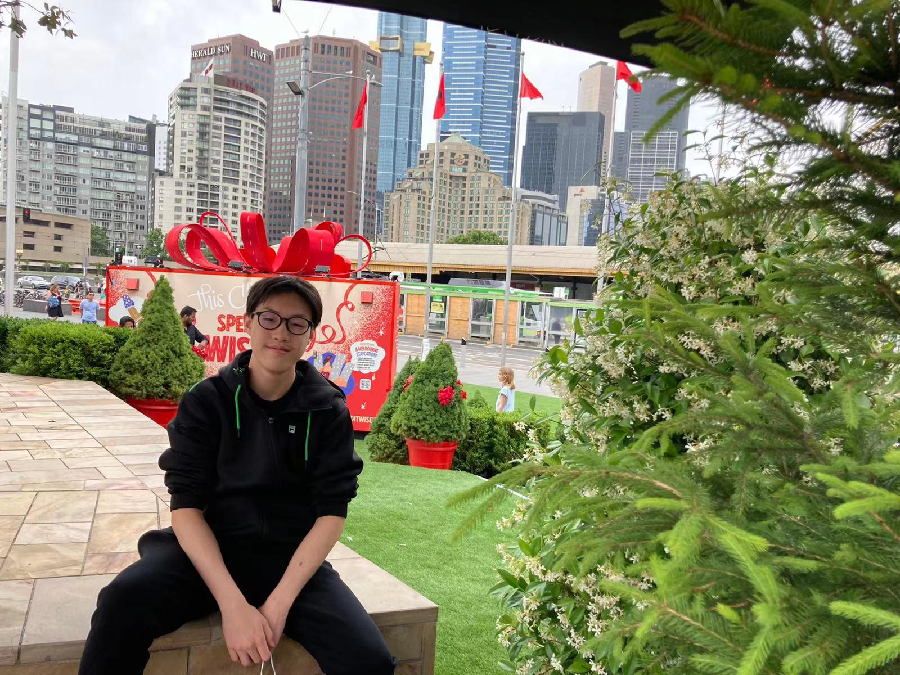
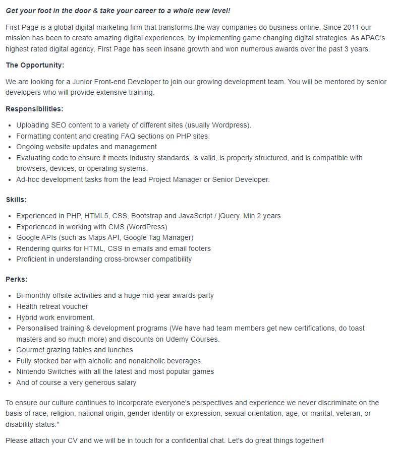
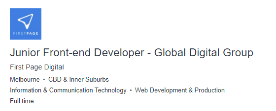
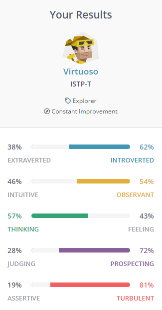

#: s3945390
e: s3945390@student.rmit.edu.au
m: +61 412 323 893
w: https://github.com/Schenkuu
An IT student currently trying to figure life out.
 I was born in Australia on the 28 of November 2003. And my culture stems from my parents being Chinese and Fijian.
My main language is English however I can’t speak much Chinese however I can understand a bit of Cantonese and Mandarin.
and I can’t speak or understand Fijian languages.
My education started off at Deepdene Primary School after I finished primary school.
I then moved up to East Doncaster Secondary College doing various subjects such as media and high schools’ version of IT which I quickly dropped out of due to the inefficient teachings.
Later on, as I would graduate from high school. I got accepted into RMIT where I found myself now as a first year IT student.
I have a 5-year-old Maltese mixed dog named “Frosty”. She has small dog syndrome and is a very mischievous dog.
However, she is absolutely scared to death by crowds and new people she doesn’t know.
She for some reason likes to chase other dogs, but when push comes to shove, and they chase her back. She becomes timid and sits still while they circle her.
Generally, I’m interested in the I.T field as a whole. But if I had to be specific, programming and coding always intrigued me.
Creating programs and artefacts like websites, video games and applications from scratch with programming/coding skills, always seemed captivating and fun to me.
I also have a great interest in cyber security and its roles. Roles such as penetration testers, cybersecurity specialists and analysts are the roles that pique my interest.
Mainly I find penetration testing the most exciting and interesting of the cybersecurity roles.
Another field of IT that interests me is virtual and augmented reality technology. This includes the VR/AR devices themselves such as AR glasses, VR headsets, haptic feedback equipment, etc. I’m invested in the future of VR/AR technology, not only because VR/AR games will get better. But due to the fact of how the future of VR and AR technology is going to be incorporated in our lives for the better. And how it can make improvements in sectors such as medicine, education, architecture, engineering, culture, entertainment, training and more. I’m particularly invested in both the hardware and software aspects of VR and AR technology. On a sidenote I’m also a bit invested in application development but its not my biggest interest.
My interest in IT started when I was young. I was always surrounded and enthralled by the world of IT as far as I can remember. Getting my first laptop and phone in the year 2012 threw me into the world of IT and videogames. Later on, as I upgraded hardware and got a better phone and laptop. I found myself more invested into the world of IT with newer technology and games but never pursued that interest. Furthermore, I got more absorbed in VR and AR technology when I bought my first virtual reality headset which was a Oculus Rift S. This let me experience the current state of virtual reality and opened my eyes to virtual reality.
Essentially my interest in IT started at a young age when I got into gaming. And I’m interested in IT and the sectors of IT such as programming, cybersecurity, a tiny bit of application programming and VR/AR technology.
Originally, I had no idea what university and course to choose. My family and cousins told me to do IT since they said it’s a good course to do if you don’t know what you wanted to do.
After choosing IT my cousins and relatives recommended RMIT to me. RMIT had a decent travel time being around 1 hour. I did some light research about RMIT and thought it was a relatively good university.
I mainly cared about travel time while Deakin was closer, the IT course they had wasn’t recommended to me as said by cousins and relatives. So, I ended up choosing RMIT.
During my studies I expect to learn the basics and skills of programming such as program design, program/application development, coding, website development and more. I also assume I’ll gain a foundation of knowledge surrounding Information Technology, such as hardware, software and applications. And skills needed to set foot into the IT industry. And I expect to be introduced to basic skills around databases such as design, creation/implementation, data management and efficient technical skills to do with databases. In addition to I suppose I would learn about IT devices and systems that are used and involved in our everyday lives. In addition to learning about IT systems, I would also learn the fundamentals of how to work as a team and create a project from the IT world. Furthermore, I expect to learn the technical skill and abilities to design and build an IT system and integrate them into an organisation. Such as integrating and administrating various systems, networks, software, and servers. Somewhere down the line I expect to learn and study about cyber security such as how to protect organisations and their networks from cyber-attacks and unauthorized access. As well as learning software engineering skills such as effective design and development of a software solution. I would also believe that I would learn about computer science such as artificial intelligence, computer learning and cloud computing. Application development/programming may also be learnt and studied during my time at RMIT but I’m not to certain on it. There is possibly more majors or minor studies and skills I will learn during my 3-year term, but this is what I expect to learn during my time at RMIT.
Web Developer
- https://www.seek.com.au/job/56307287?type=standout#sol=103944ed897b5488056ceb8f2cdff2863905911e (First Page Digital)
 A web developer is someone who specialises in the development of websites and web related matters. Web developers work with programming languages such as HTML, CSS, Java, JavaScript and more. However, there are types of web developers, and the description varies. For example, a front-end developer manages matters of the front face part of a website such as visual parts and interactions that a user can see and use. Whereas a back-end developer is responsible for all the coding, network and server related parts of that website that connect to the work of front-end developers. And then there is full stack developer who basically does both the work of a front end and back-end developer.
Web development seems like an interesting position to me. Because It’s satisfying since It’s kind of like art in a sense where you essentially create something from nothing, with only the knowledge of that hobby. Whereas in this scenario you use the skills as well as the knowledge of programming and its languages and combine them with your experience to create a website or interface from nothing. Also being a web developer seems flexible. As in you can work from home or anywhere on any device. You could even work while travelling. The work life balance seems appealing. Also, websites and the need for web developers isn’t going anywhere anytime soon. Moreover, in the future the need for websites and web developers is going to increase.
Firstly, you would need to be well-versed in programming and programming languages such as HTML, Python, CSS, Java and JavaScript, Swift, C++ and the like, PHP and more. You would need to complete a qualification that focuses on web development such as a major on web development. An internship while studying would be needed to provide relevant experience and guidance from people who are already web developers. Also possibly need to have the skill to work with databases and SQL and other management systems. Some qualifications may involve a portfolio or certificate asserting your status as a professional. You would also need to know how to use relevant applications like Github. And you would also need to know user centred design as to create a good user experience with the products or websites that are created. And of course, you would need soft skills like communication and interpersonal skills, in addition to the ability to work independently and with others as a team. You would also need problem solving and customer service skills to work with clients.
I currently possess soft skills such as communication and teamwork skills. I do have interpersonal and autonomous skills however I believe that I need to work on these skills more.
I have problem solving skills and some customer service skill however I also assert that these skills do need more work.
Firstly, I would continue passing and pursuing my course in IT. Get a better understanding of programming, programming languages and databases in “Introduction to programming”, “Introduction to IT” as well as “Practical Database concepts”. I would then go on to do programming 1 in semester 2 of my first year and then step up from “Intro to IT” to the next level of Information Technology. Then I would keep pursuing programming and when I am able to, major in web development and pursue IT again. I would also need to pursue and pass user centred design so that the websites I create have a good user experience. Along the way I would also try to find an internship while studying to gain the skills and experience working as a web developer as well as training other skills. Such as working with others, the ability to work by myself efficiently, improve my interpersonal skills, problem solving skills and customer service skills. During all this I would build my portfolio for example expanding my GitHub profile and try my hand at getting a certificate in web development.
I am a Virtuoso (ISTP-T) which is someone that has the Introverted, Observant, Thinking, Prospecting and Turbulent personality traits. As stated by the 16Personalities website this means I “tend to have an individualistic mindset, pursuing goals, without needing much external connection.” Also, that I “engage in life with inquisitiveness and personal skill, varying their (my) approach as needed.”. However, I differ from ISTP-A (assertive) as I am an ISTP-T (turbulent) which means I’m more likely to doubt my abilities and knowledge when I make a mistake. In addition to that I may be more likely to be overwhelmed by life in general or when things don’t go my way. Whereas an ISTP-A (assertive) “are notably less likely to compare themselves to others – or worry about fitting in with them.” – ISTP Personality, 16personalities.
At times I feel I am an optimistic and energised person, as I mostly involve myself with a project or other. I may as I am a very practical person as opposed to theoretical. And find myself putting myself in the action. I feel I have the ability to stay mostly relaxed and live in the moment. And even if the most stressful of events is happening in the near future, I don’t worry too much about that certain event. I feel that with this trait I would be good in a crisis and can go with a little risk and am not afraid to get dirty when action calls. I also am quite flexible I feel with my personality and mindset. I can quickly adapt with some effort, and I feel that I am a flexible and versatile individual. I believe I know how to effectively prioritise and when to go full steam ahead when its needed most. I trust that rationality and logic are both strengths and weaknesses in their own regard. However, rationality and logic is a good strength. As the more critical thinking about an objective or decision is better then a quick and emotional one.
I am private and reserved, I usually keep personal matters to myself and if it’s too awkward to make talk or small talk I prefer silence. I am also decently stubborn and dislike commitment. It is a challenge for me to work, study or do the same task for too long for long periods of time. I am also easily bored/uncommitted, once something new has been learnt or understood I rarely find myself going back onto it and learning and expanding my knowledge on that subject. I am curious but cannot stay focused on subjects like studying. I also may be doubtful, as when mistakes are made, I may be inclined to doubt my skills and knowledge. Risky behaviour may also be a weakness of mine. As combined with the stubbornness, some difficulty with understanding others’ emotions, and disproval of commitment can lead to unhelpful risky behaviour such as pushing boundaries to see what would happen. I’m somewhat insensitive in terms of rather preferring rationality and logic over emotional responses. Which could lead to the conversation with someone or project to not come out right.
I believe that these results may influence my behaviour during teamwork. As I work on tasks that are the most befitting according to my strengths. As my strengths and weaknesses may determine what my role as a team member is, how I should communicate with other team members, and how united and connected I am with my team members as a whole. These results would affect how I work and talk to others in my team. And I would take account of these results such as my strengths when deciding what role or task to pick. In addition to areas of work that I may be weak at, to other team members who have their strengths in that area. When forming a team, I would consider what individual is good at what I’m weak at. So that the team can co-exist and work off each other’s strengths and weaknesses.
I am a visual learner.
If you are a visual learner, you learn by reading or seeing pictures. You understand and remember things by sight. You can picture what you are learning in your head, and you learn best by using methods that are primarily visual. You like to see what you are learning. As a visual learner, you are usually neat and clean. You often close your eyes to visualize or remember something, and you will find something to watch if you become bored. You may have difficulty with spoken directions and may be easily distracted by sounds. You are attracted to color and to spoken language (like stories) that is rich in imagery.
"Remember that you need to see things, not just hear things, to learn well."
“Openness describes a person’s tendency to think in abstract, complex ways.”
“Conscientiousness describes a person’s ability to exercise self-discipline and control in order to pursue their goals.”
“Extraversion describes a person’s inclination to seek stimulation from the outside world, especially in the form of attention from other people.”
“Agreeableness describes a person’s tendency to put others’ needs ahead of their own, and to cooperate rather than compete with others.”
“Neuroticism describes a person’s tendency to experience negative emotions, including fear, sadness, anxiety, guilt, and shame. While everyone experiences these emotions from time to time, some people are more prone to them than others.”
It means that I have a result of my personality that I can use to understand and have an insight about myself. It gives me insight and clarification about my habits, my feelings and how I interact with my feelings. It also helps me understand myself better, regarding my strengths and weaknesses. The result could also help me determine choices in my life such as what careers are more fit for me or who I can effectively cooperate work and work as a team. It also teaches me the best methods when undertaking certain task such as studying. As the traditional way to study could not be for me but due to the results of the tests I could try and figure out the best and most effective way for me to study or undertake tasks. These tests can also show what I’m good at and what I’m bad at, so that others can work off my weaknesses while I play on my strengths.
My project will essentially be the development of a smartphone application/software either using programming itself as a base or a tool like MIT App inventor. Basically, the application/software hooks up/is installed into to a person’s smartphone and built-in alarm system. This application/software is mainly for people who aren’t morning people and have a hard time getting out from bed like myself. The projects objective is to improve the morning routines of these people via technology through mobile phones and readily available devices. As a principal I believe its important that technology helps and improves the daily lives of people. My project is aimed at my version of IT innovation which is to either create or update new and existing technologies to be more efficient/optimized for the sole purpose of improving the lives of many. This can either be a large industry revolution that leads us to the creation of androids/robots or small technologies that just slightly improve people’s everyday lives. However, my project goes under the small category which is creating/updating a piece of technology that improves the lives of others by a small margin, but neither the less improves it for the better.
I believe this project would be interesting because it takes existing technologies and combines them together to make the process of a getting out of bed more efficient. I also think it would be quite intriguing to work on and create an application/software that works in tandem with interactable products in our lives. Also, I believe that this project would be useful to many. According to an article by Kim Berry called “The rise of early risers”. They state that “Pure profile carried out the research on a nationwide sample of more than 1000 Australians”. The statistics that they concluded were that “almost half of Australians (49%) are morning people and consider themselves happy”. This statement essentially claims that 51% of Australians in that study are not morning people and that they do not consider themselves happy when they wake up. This is very relevant to me as I myself am also not a morning person. Which is why I believe this project would be useful to people who aren’t morning people like myself.
The application and software I’m creating is a morning routine type application. Essentially it features some type of connection be it Bluetooth or WI-FI. The application/software could use the phones built in alarm application. Or I could create an alarm hub application that is both an alarm and is a hub for data transmission between all the devices that are connected to the alarm hub. Essentially when the alarm goes off on either the built-in alarm app or the alarm hub app I create. Basically, the alarm is connected to a mechanism that automatically turns on the kettle or coffee machine when the alarm goes off.
The mechanism could be a piece of machinery I attach to the kettle or coffee machine such as a raspberry pi to activate it. Or I could set up Rube Goldberg type device that press down onto the buttons of the coffee machine or kettle when it receives the signal/data that the alarm has gone off. This feature is for people who need a pick-me-up in the morning like myself and this also makes it more convenient and efficient for people who have this routine. By the time the individual has got out of bed and gone through their morning routine or walked to their coffee machine or kettle.
Their coffee or kettle is either halfway done or completed ready to drink or make tea. Another feature of my project would include lights or smart lights that connect to the built-in alarm or alarm hub. Essentially when the alarm goes off the lights turn on with them as they receive the data or signal that the alarm has gone off. This feature is mainly aimed at people who have a hard time getting out of bed which is most people that aren’t morning people. These two features are the main functions of my application/software.
However optional features include vibrators that the individual places on or under their bed themselves. This feature is the last resort and an optional feature for those individuals like myself who find it quite hard to get out of bed. Another optional feature is either a text-to-speech or sticky note function. This function can either read out a person’s morning routine and what they need to do. Or it could be just a sticky note type design which lists out what the individual’s morning routine is. Both functions either the text-to-speech or sticky note could also read or list out that person’s calendar events if they have any on that day.
This function is mainly aimed at people who wake up groggy and can’t remember a lot in the morning. These two features are both optional but are aimed to be helpful in aiding a person’s morning routine. I believe that many obstacles and drawbacks could occur in this project idea. Such as firstly syncing all the devices up to the alarm. For example, syncing up the coffee machine or kettle to activate in the first place. I’m not sure if you can activate a coffee machine or kettle with something like a raspberry pi but this is a drawback. Also, the device and platform that I make the application/software for could be an obstacle. Devices such as Apple are heavily restricted, and I don’t think it would be possible at all to implement my project idea on a apple product since they are so protected and restricted.
I would need to use an open-source operating system that I can freely tinker with such as the android OS and others like it. Another obstruction could be creating the application/software in the first place as I have no experience in application creation or programming. Another drawback I think would occur is working with Bluetooth and other connections, as I have no idea and no experience working with Bluetooth or wireless connections.
The phones that would be used would need an open-source operating system or an operating system that lets me freely tinker with the phone. I could need hardware such as raspberry pi’s to sync up to devices such as the coffee machine, kettle or lights. Other hardware could include smart lights that I could just tinker with and perhaps use the raspberry pi to help with rewriting. I would need a programming medium or application/software creator so I can make my application/software in the first place. If I were to add in the features of the vibrators, I would need either some wireless connecting vibrators that can be modified and tinkered with so I can sync them to the alarm.
There are various skills, hardware and perhaps special hardware that is needed for my project idea. Firstly, you would need the skill and ability to program or develop an application/software for a mobile device. You would also need the ability to work with wireless connections such as Bluetooth and be able to sync them to the application. Another skill would be the ability to even rewrite or tinker with the mobile device to either allow the application to connect to its built-in alarm. A raspberry pi may be needed for some of the devices to be synced up. And the knowledge of programming and using a raspberry pi would be needed. Smart lights, vibrators and maybe smart coffee machines or kettle if they exist might be needed. The skill to program an application may somewhat be hard. The ability to rewrite/tinker with a mobile device may also be hard to learn. And knowledge of being able to sync various wireless devices could also be a hassle to learn. Learning and gaining the skill of using a raspberry pi may be somewhat difficult. Finding the equipment such as the wireless vibrators, smart lights and right coffee machine/kettle may be difficult.
If my project ends up being successful with all its features and the software. As well as the added optional features. This results in an outcome of a thrifty little application that can help people who aren’t morning people and have a tough time struggling to either wake up or get going in the morning. The development of this outcome would aid me in my ideal job as I end up learning how to program an application. Where I can then transfer my skillset from programming to web development/programming. The experience and knowledge from this project such as programming an application/raspberry pi or smart device could also help and transfer over to my ideal job being web development. But the original problem of “51%” of Australians who aren’t morning people and find themselves struggling in their morning routine will be solved, as my application/software aids them with waking up and giving them convenient functions that help them either by waking them up via smart lights and shaking their bed or just listing out things they need to do and preparing their coffee or tea quicker.
Kim Berry, (2021). The rise of early risers. Australia: Food & Drink Business. (https://www.foodanddrinkbusiness.com.au/news/the-rise-of-early-risers)
16personalities ISTP-personality (https://www.16personalities.com/istp-personality)
The Big Five Personality Test, Truity (https://www.truity.com/test-results/bigfive/17315/29379682)
What’s Your Learning Style? 20 Questions, Educationplanner.org (http://www.educationplanner.org/students/self-assessments/learning-styles-quiz.shtml?event=results&A=5&V=9&T=6)
Job listing for Junior front end web developer (https://www.seek.com.au/job/56307287?type=standout#sol=103944ed897b5488056ceb8f2cdff2863905911e)